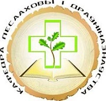

Главная
О кафедре
Историческая справка
Состав кафедры
Научная школа
Выпускники кафедры
Ксилотека
Учебная работа
Абитуриенту
Студентам
Студентам заочного факультета
Подготовка магистрантов
Подготовка аспирантов
Галерея
Свяжитесь с нами
Белорусский государственный технологический университет
Кафедра лесозащиты и древесиноведения
Лесохозяйственный факультет
